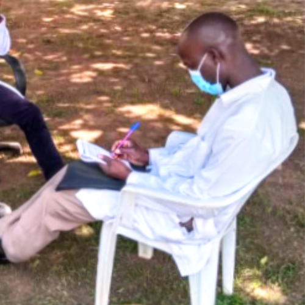
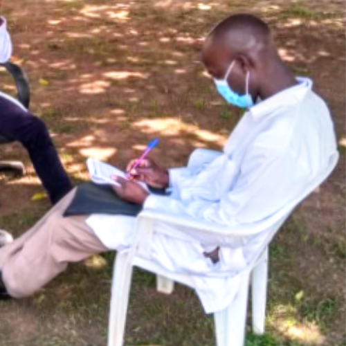

Expertise and Experience
With years of dedicated service, Azar Hope Foundation has become a trusted name for living in sake of others. Our team comprises professionals who bring extensive knowledge and experience to every project, ensuring the highest quality of service.
Comprehensive Services
We offer a wide range of services tailored to meet the unique needs of rural and marginalized communities. From Education Health and community development to promote a brighter future, Azar Hope Foundation provides holistic solutions that drive sustainable growth economically.
Community-Centric Approach
At Azar Hope Foundation, we prioritize the needs and aspirations of the communities we serve. Our initiatives are designed to empower individuals and groups, fostering self-reliance and resilience. We work closely with local stakeholders to ensure that our projects are culturally sensitive and community-driven.
Transparent and Accountable
Transparency and accountability are core values at Azar HOPE foundation. We maintain open lines of communication with our beneficiaries, partners, and supporters, ensuring that our operations are transparent and our results are measurable. Our commitment to accountability builds trust and fosters long-term relationships.

 
